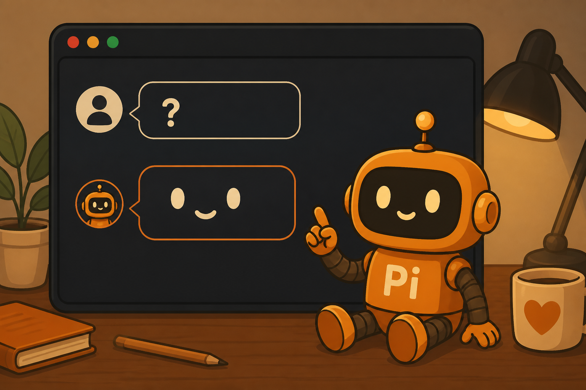

/
斜杠命令
输入 / 弹出菜单

终端里的聊天机器人。
你打字，它帮你改代码。
输入 / 弹出菜单
按键盘立刻做事
找文件 / 跑命令
在输入框打一个 /
/model换模型/thinking思考深浅/settings打开设置/new新开一局/resume回到旧局/quit离开 Pi/name给这局起名/session看这局信息/tree跳回某句话/fork从旧话分叉/clone复制当前线/compact压缩旧记忆/copy复制它的回答/export导出这一局/import导入旧文件/share生成分享链接/login登录账号/logout退出账号/trust信任这个项目/scoped-models轮换模型名单/llama本机小模型/reload重载配置/hotkeys看全部快捷键/changelog更新了什么发送
换行
补全路径
停下
打开历史树
清空。再按退出
选模型
下一个模型
上一个模型
思考深浅
折叠工具输出
折叠思考过程
复制回答
Windows 贴图
用外部编辑器
弹出文件搜索
结果给 Pi 看
结果不给 Pi 看
插一句提醒
排到后面
把话拿回来
Windows Terminal 里，Alt+Enter 默认是全屏。要先改终端快捷键，Pi 才能收到。